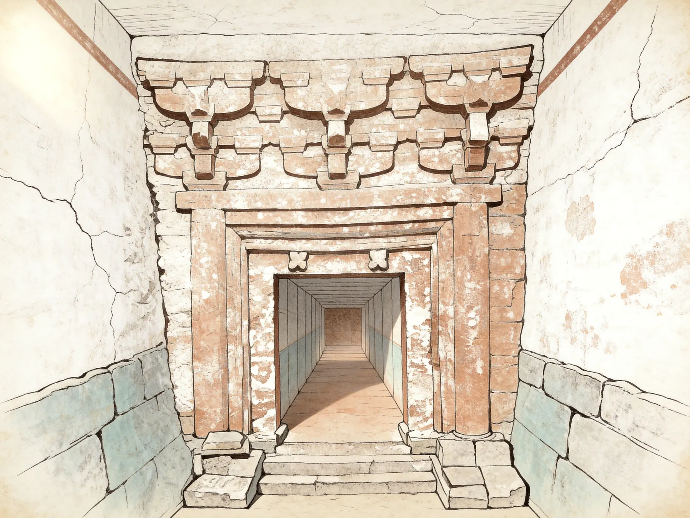
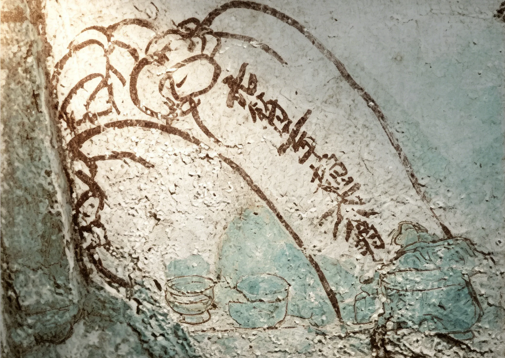
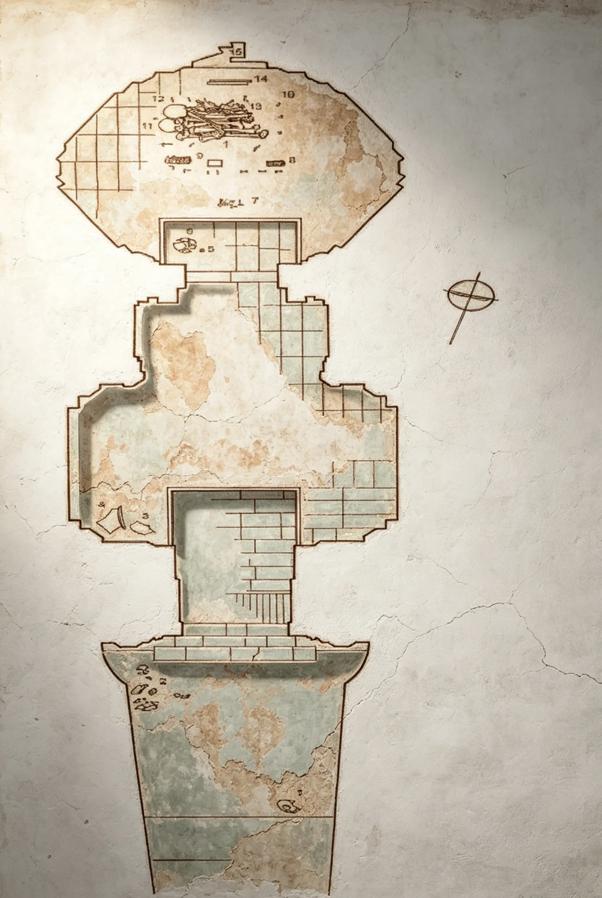
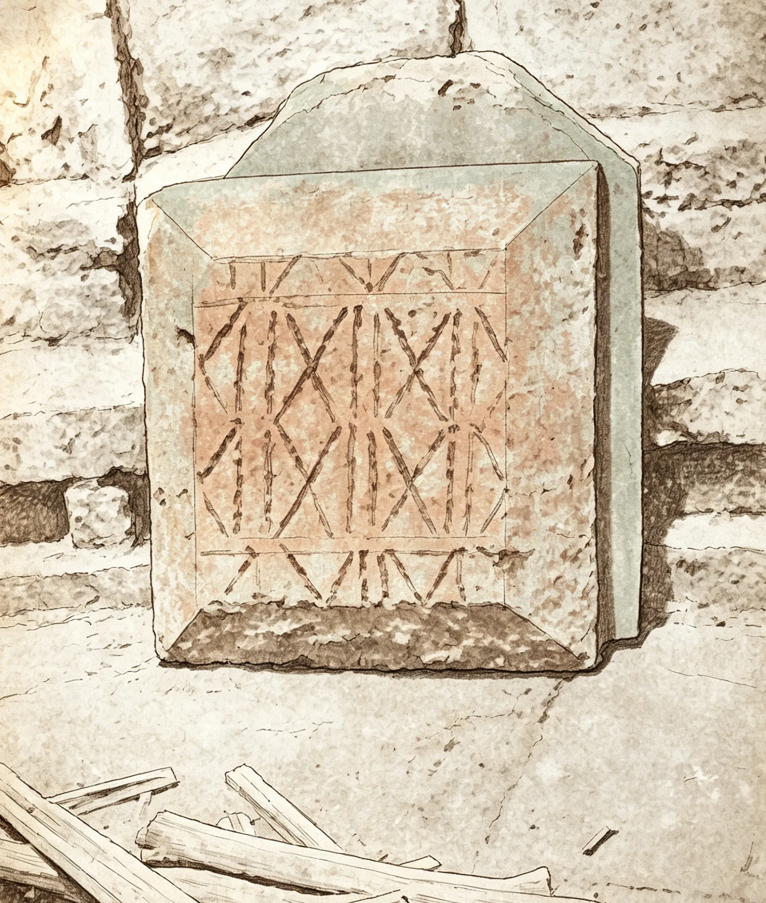

现场观察

白沙宋墓 M1
AI考古解密向小游戏

现场观察
章节提示
章节线索整理台
墓门验证
门洞后的通道仍被封门意象压住。按记录夹中的空间线索，由外到内点亮四枚符记。
提示：从门额、封门砖缝、墓道环境到门洞深处。
甬道校准
东西两侧叠胜纹样被拆成九块残片。点击每一块在候选位置间移动；当九块都显示“归位”时，边缘会严丝合缝地合成一张完整菱形图纹。
提示：每块残片都会在几个候选位置间移动。让所有残片回到中线，完整菱形才会闭合。
题记辨读
第一步：根据残字拓片读出纪年。第二步：继续在题记里找出“赵大翁”。第三步：帮考古实习生改掉报告里的过度推断。

找齐后记录为“赵大翁”称谓线索；它会引出身份疑问，但不能直接确定墓主身份。
过道题记写有“元符二年赵大翁布”，因此可以确认 1099 年这个时间锚点。
正确记录应保留“1099 年时间锚点”和“赵大翁称谓”，但身份判断需要结合其他材料。
提示：图中发光处是残字拓片，不一定能直接读出完整字。先辨笔画，再排读序。
遗物定位
在展开地图中进入不同图纸，用放大镜自由搜查宝物痕迹；底部轮廓可以随时查看线索。

先在展开地图选择位置，也可以点底部任意宝物查看线索。找到哪个就先收录哪个。
砖缝导流
点击砖缝方块旋转，让左侧的水汽痕迹沿暗线通向右上的残片位置。
提示：亮起的砖缝表示已经从起点连通。
通关成功

暗线连通后，一件可疑文物线索被照亮。
墓门清理